신간 안내 모두 보기

- 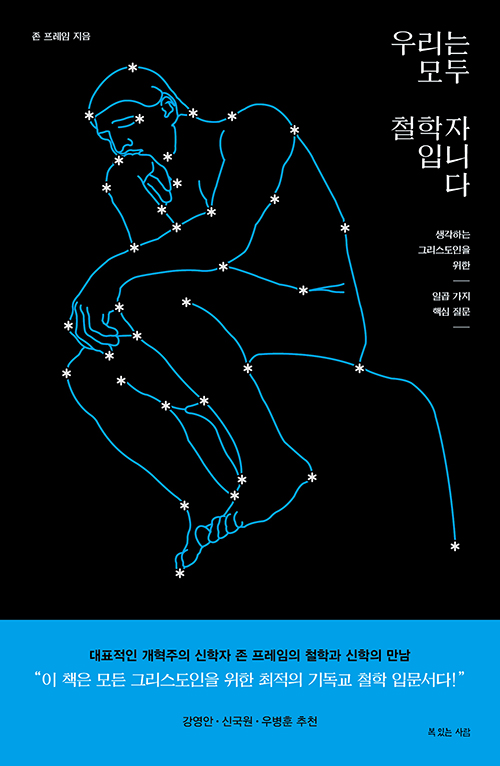
- 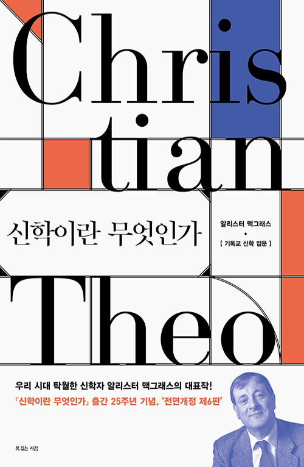


- 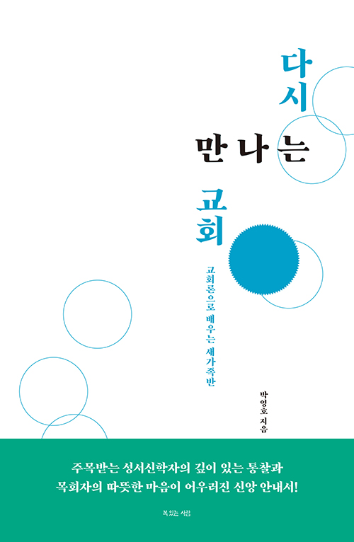
- 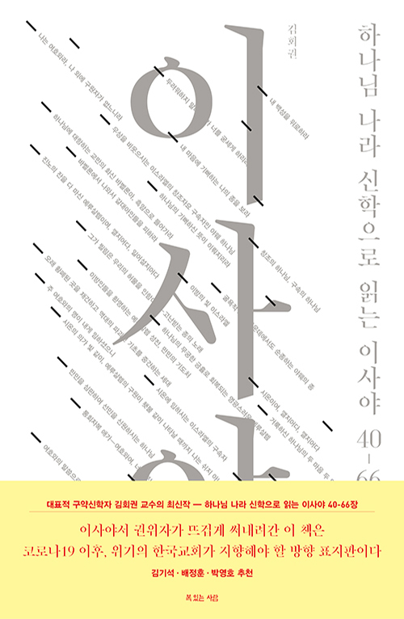


책 이야기
카드 뉴스 모두 보기
- 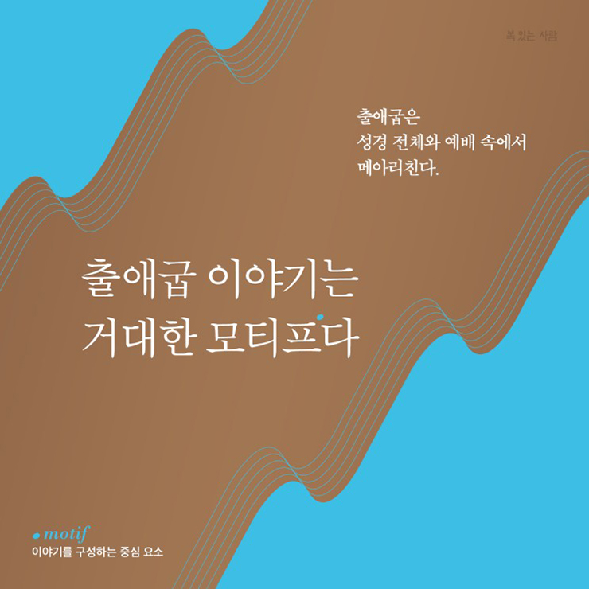
- 알라스테어 로버츠, 앤드루 윌슨
- 『출애굽의 메아리』

- 존 프레임
- 『우리는 모두 철학자입니다』
- 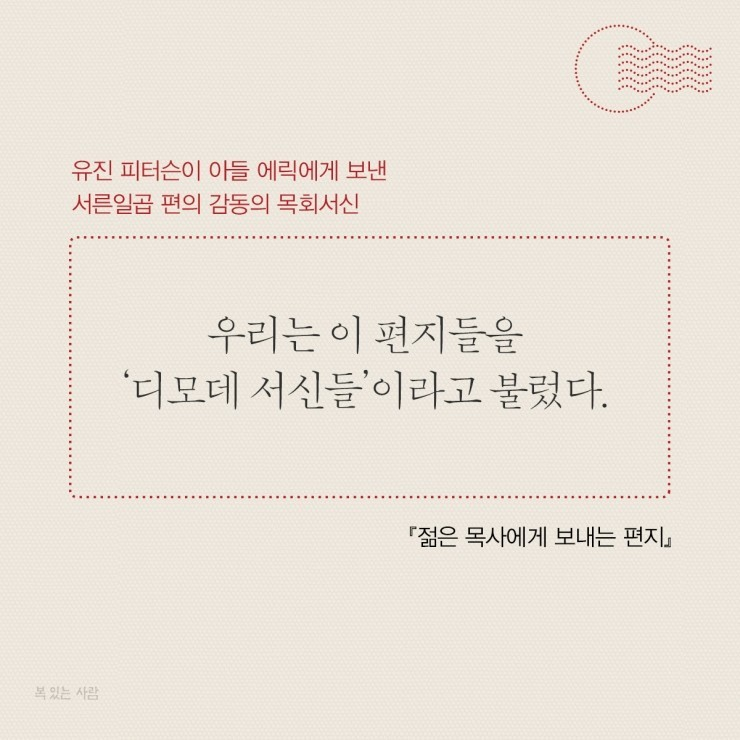
- 유진 피터슨
- 『젊은 목사에게 보내는 편지』
- 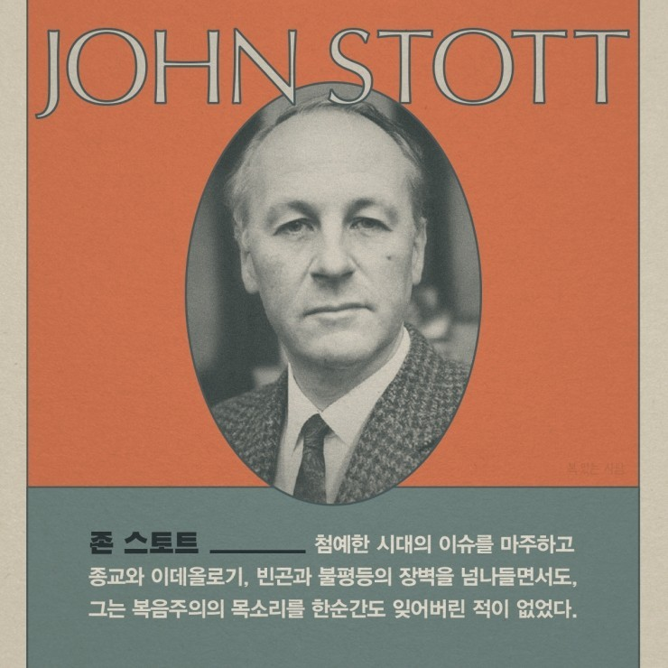
- 존 스토트
- 『모퉁잇돌 그리스도』

- 유진 피터슨
- 『사복음서 설교』
- 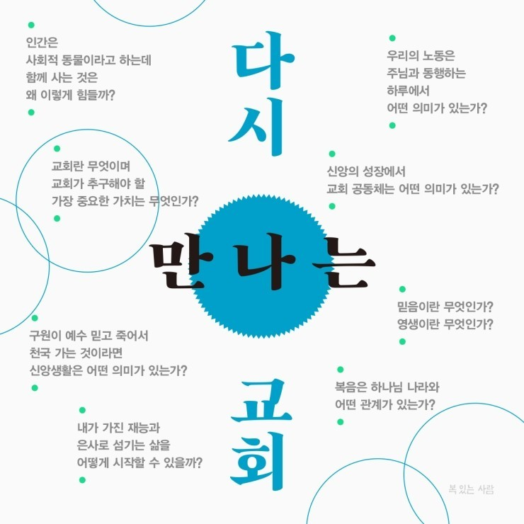
- 박영호
- 『다시 만나는 교회』
- 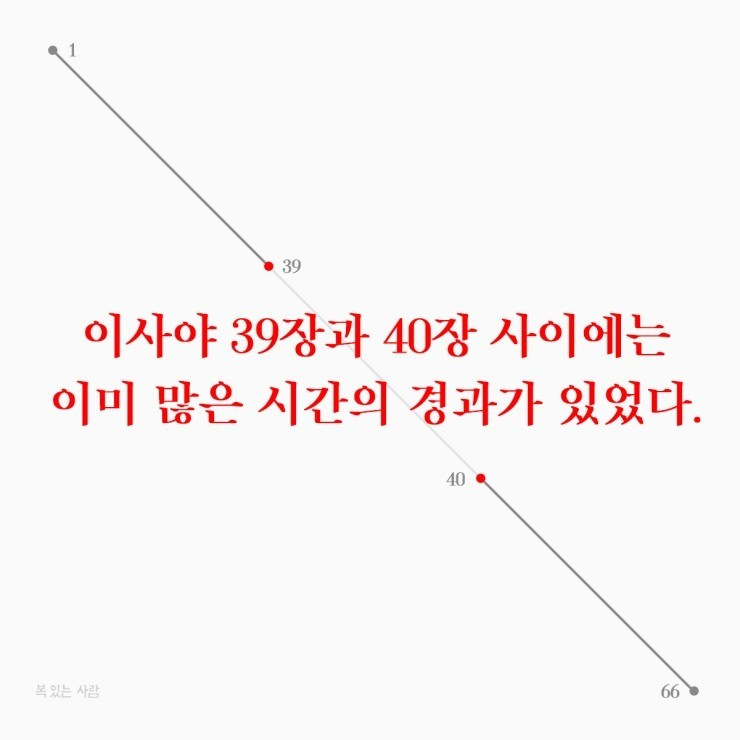
- 김회권
- 『하나님 나라 신학으로 읽는 이사야 40-66장』
- 니콜라스 월터스토프
- 『경이로운 세상에서』

- 게리 W. 문
- 『달라스 윌라드』

- 로완 윌리엄스
- 『루미나리스』

- 리처드 스윈번
- 『신은 존재하는가』
- 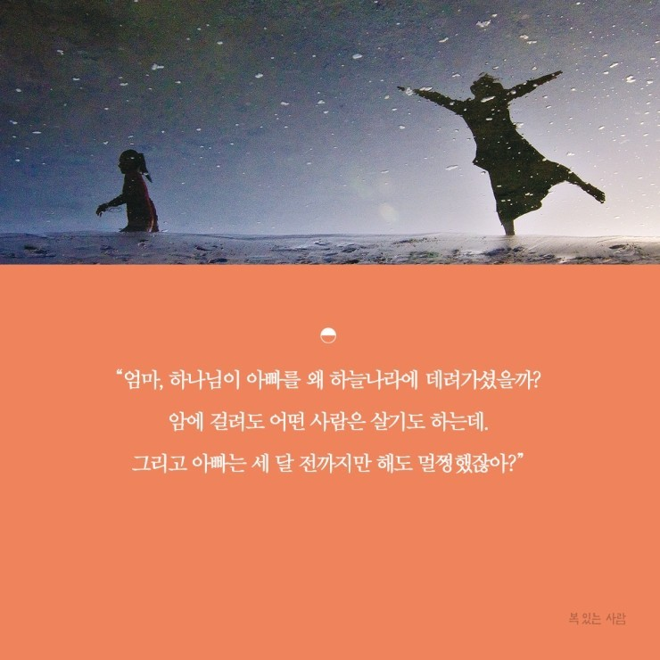
- 김명선
- 『사랑이 남긴 하루』
- 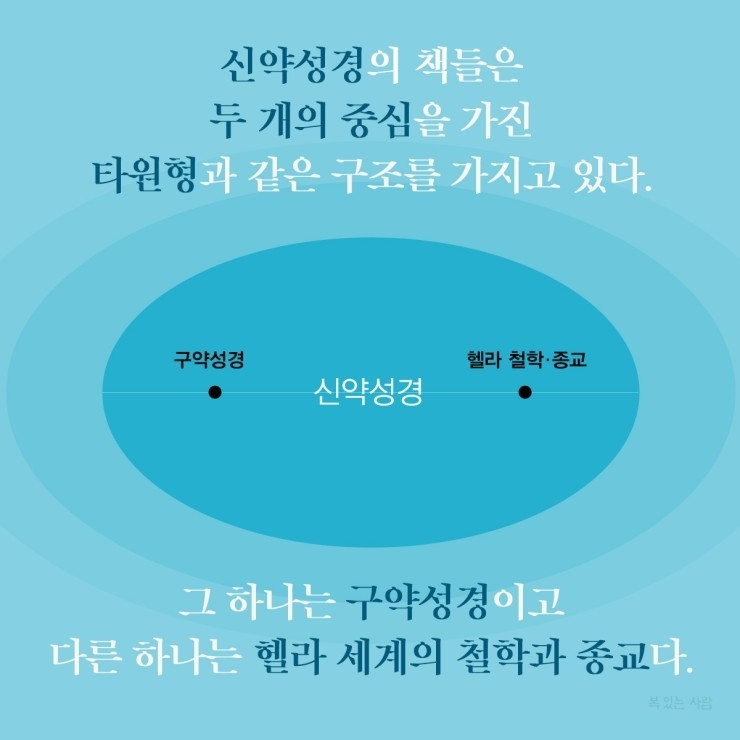
- 김회권
- 『하나님 나라 신학으로 읽는 요한복음』

- 케빈 밴후저
- 『들음과 행함』
- 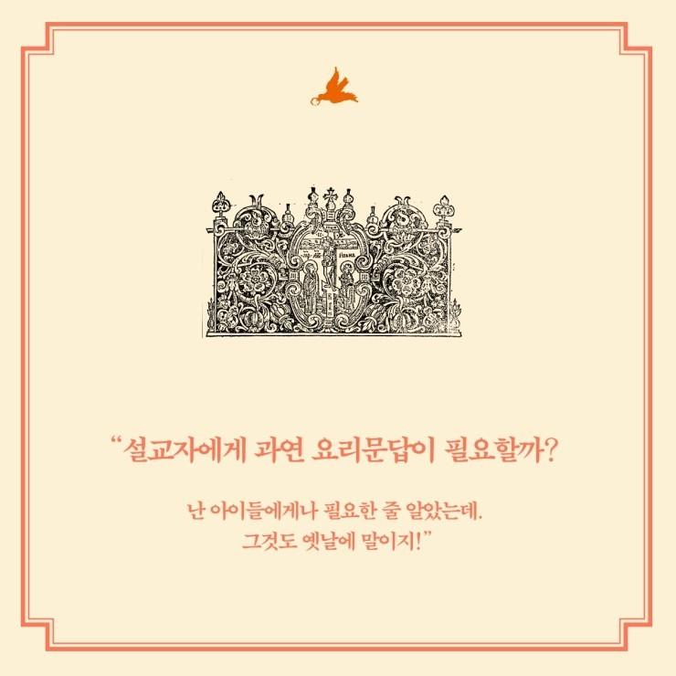
- 루이스 앨런
- 『설교자의 요리문답』
- 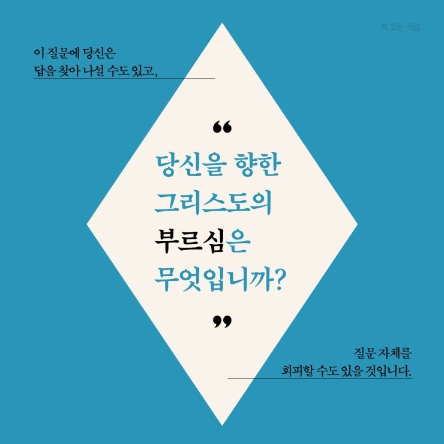
- 에드먼드 클라우니
- 『부르심』
- 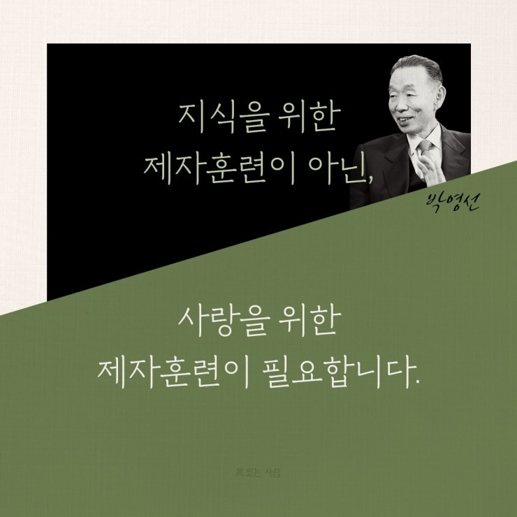
- 박영선
- 『인격의 제자훈련』
- 칼 라너
- 『칼 라너의 기도』
- 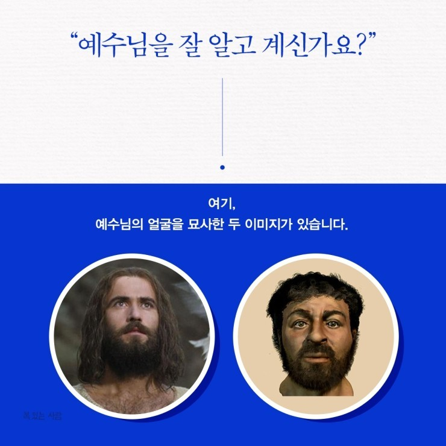
- 김정형
- 『예수님의 눈물』

- 낸시 피어지
- 『네 몸을 사랑하라』

- 김영봉
- 『나는 왜 믿는가』
- 시드니 E. 알스트롬
- 『미국 기독교사』

- 토드 빌링스
- 『슬픔 중에 기뻐하다』

- 조엘 비키
- 『설교에 관하여』
- 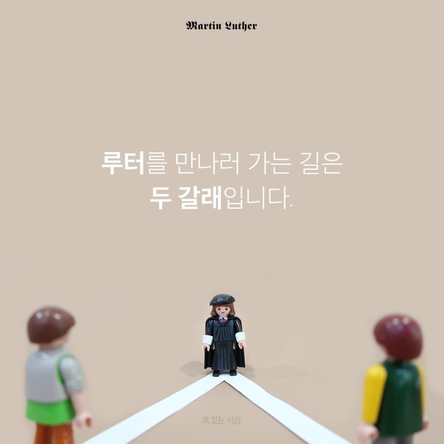
- 마르틴 루터
- 루터를 만나러 가는 길
- 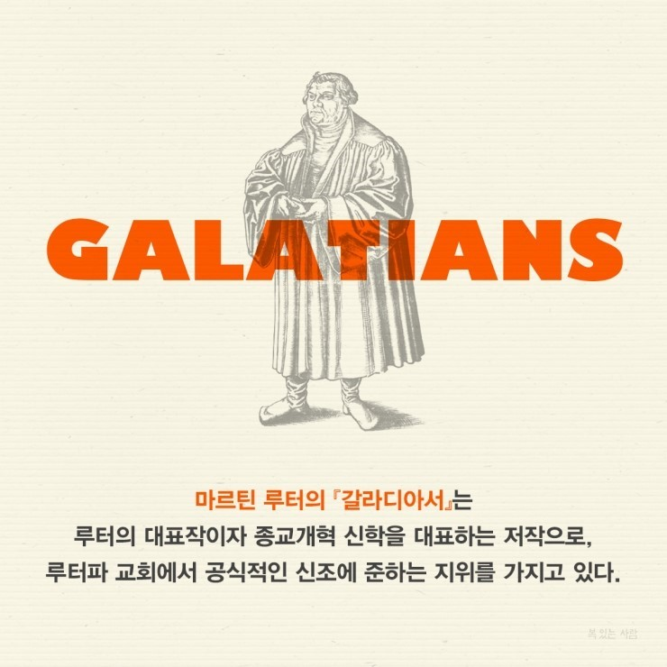
- 마르틴 루터
- 『마르틴 루터, 갈라디아서』

- 마틴 로이드 존스
- 『에스겔 강해』

- 우병훈
- 『기독교 윤리학』